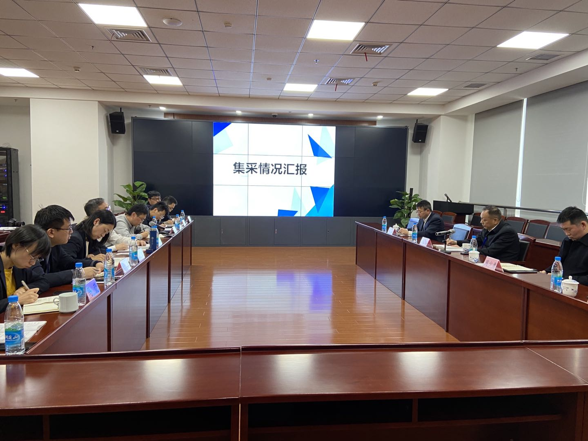
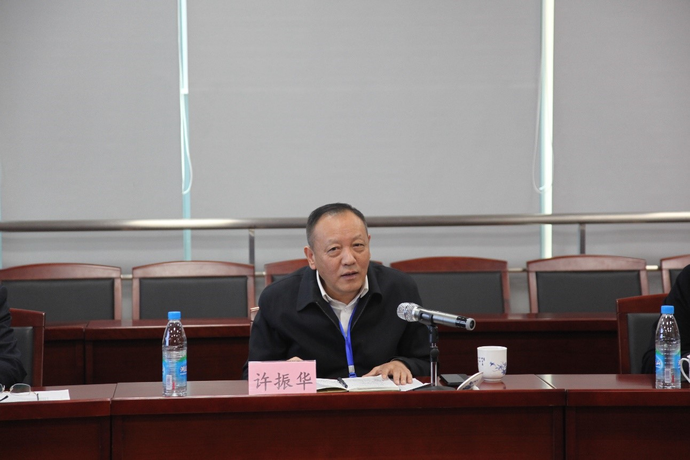

【信息发布时间：2020-12-17阅读次数：】 【我要打印】 【关闭】
12月16日，市公共资源交易管理委员会办公室主任、市行政审批局局长许局长带队视察政府集中采购工作进展情况，并召开座谈会，会后实地查看了集采办公场地。

座谈会上，市公共资源交易中心副主任张彬介绍了集采设立以来的工作开展情况，对近期两个集采项目的开评标、集采机构的职责分工、目前面临的问题及下一步工作计划作了重点汇报。随后，产交中心相关负责人、各有关部门负责同志作了交流发言。市行政审批局副局长张硕群表示集采工作的基础已经打牢，下一步要提高市政府集中采购中心的影响力和公信力，争取每个季度召开一次集采工作座谈会，多听取市场主体的意见和建议；集采中心和集采服务中心要找准各自的工作定位，增强服务意识；同时要抓紧制定集采工作的应急预案。

听取完汇报工作，许局长充分肯定了集采机构设立以来开展的工作是卓有成效的，两个集采项目的开标对集采队伍来说，是一次宝贵的锻炼和考验的机会，也为今后集采工作的全面推进打下了坚实的基础。他强调，明年的集采工作仍然任重道远，提出了三点要求，一是要牢固树立大局意识，加强研究，提升采购人对采购服务的认同，确保集采工作高效运行；二是要明确政府集中采购部和集采服务中心职能边界，同时集采服务中心应积极拓展业务范围；三是加快集采工作向电子化、信息化、智能化迈进，将其作为集采工作的重要抓手，必要时可以通过企业来推动信息化建设。最后，许局长强调，一定要加强廉政建设，集采工作人员要时刻紧绷廉洁自律这根弦，丝毫不能松懈。
苏州市行政审批局副局长张硕群，市行政审批局综合处处长周少勇、公管处处长谢伟、副处长张领陪同视察，市公共资源交易中心副主任张彬，相关部门负责人，产交中心相关负责人参加座谈。